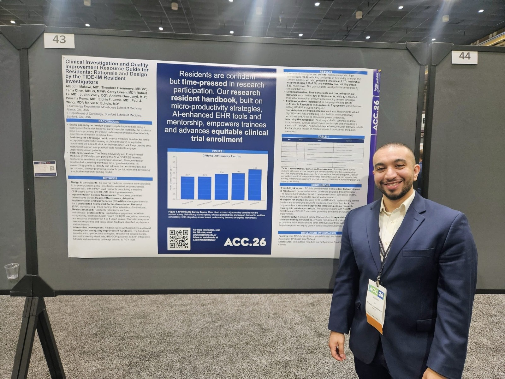

Insights
Evidence, implementation, and cardiovascular prevention
Practical, carefully sourced perspectives on hypertension, health equity,
clinical research, and resident education from Alladdin Yousif Makawi, MD.

Hypertension · July 28, 2026
A practical framework for accurate measurement, out-of-office
confirmation, dependable follow-up, prevention, and equitable care.
Read the article →
Publishing gradually
In development
Future pages will be released only after their underlying publications,
firsthand details, and images are fully verified.
Clinical research
Equitable clinical-trial participation
Workflow, communication, and implementation principles that can make
cardiovascular research participation more feasible.
Medical education
Resident ECG burst learning
A measured reflection on concise repetition, curriculum design, and the
limits of a single-center quality-improvement experience.